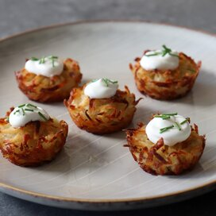

Crispy (No-Fry) Potato Pancake Poppers

Description
I think I've given up on trying to make amazing potato tots at home. I've tried a few different methods, and with a lot
of effort and mess you can make a mediocre batch, but they're just not worth all the work, when you can just tear open a
bag of frozen tots. However, as far as I know, they don't sell frozen Crispy Potato Pancake Poppers, which are amazing,
and were "invented" during one of these failed tot attempts.
Besides grating some potatoes and mixing a few ingredients in a bowl, there's not much work involved in creating these
crispy, crusty beauties. Plus, we're cooking them in the oven, so not only are they pretty easy, there's very little
mess. Beyond how simple, delicious, and texturally exciting these are, they're also very versatile.
Ingredients
- 3 tablespoons butter, melted
- 2 large russet potatoes, peeled
- ½ tablespoon garlic powder
- 1 ½ teaspoons kosher salt
- ¼ teaspoon ground black pepper
- 1 pinch cayenne pepper, or to taste
- 1 tablespoon olive oil
- 1 tablespoon all-purpose flour
- ½ cup finely grated Parmigiano-Reggiano cheese
Steps
- Preheat the oven to 450 degrees F (230 degrees C). Very generously brush melted butter into the bottom and sides of 24
mini muffin cups. Place the tin(s) on a baking sheet and set aside until needed.
- Add cold water to a large bowl until 1/3 full. Grate potatoes into the cold water, then fill the bowl almost to the top
with more cold water. Swish the potatoes around with your hands to rinse off the starch, then pour off most of the water
and refill with more cold water. Continue this process until the water runs almost clear. Pour potatoes into a colander
and let drain for a few minutes.
- Transfer grated potatoes to a clean kitchen towel. Wrap potatoes in the towel and squeeze over a bowl until no more
liquid comes out.
- Transfer potatoes to a clean bowl and add garlic powder, salt, pepper, cayenne, and olive oil. Sprinkle flour over top,
then add Parmigiano-Reggiano. Mix and toss gently with your hands until thoroughly combined and mixture feels damp.
- Grab potato mixture from the bottom of the bowl to get as much moisture as possible, and fill the prepared muffin cups.
It's okay if the mixture comes up above the pan by 1/2 to 1 inch.
- Bake in the center of the preheated oven until golden brown on top, caramelized on the bottom, and crispy all over, 40
to 45 minutes.
- Remove from the oven and let sit in the pan for 5 minutes before flipping them over onto the baking sheet.